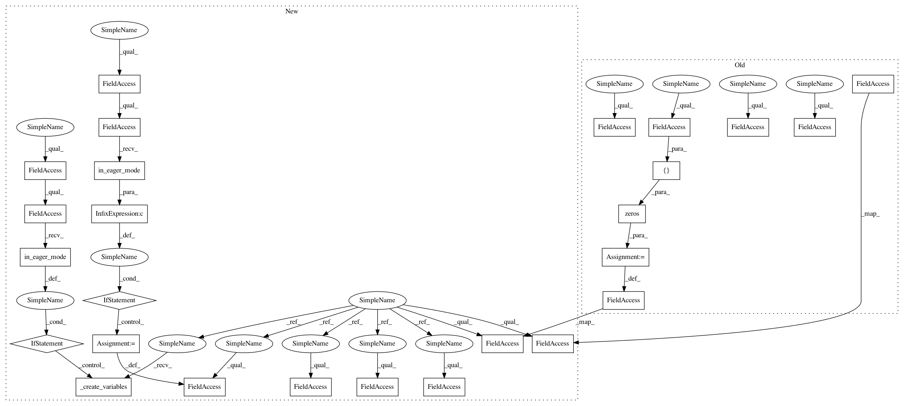

887f94bd4f292778622304ba627727a6dacad43f,deepchem/models/tensorgraph/layers.py,GraphConv,create_tensor,#GraphConv#Any#Any#,2414
Before Change
in_channels = inputs[0].get_shape()[-1].value
// Generate the nb_affine weights and biases
self.W_list = [
initializations.glorot_uniform([in_channels, self.out_channel])
for k in range(self.num_deg)
]
self.b_list = [
model_ops.zeros(shape=[
self.out_channel,
]) for k in range(self.num_deg)
]
// Extract atom_features
atom_features = inputs[0]
After Change
]) for k in range(self.num_deg)
]
def create_tensor(self, in_layers=None, set_tensors=True, **kwargs):
inputs = self._get_input_tensors(in_layers)
// in_layers = [atom_features, deg_slice, membership, deg_adj_list placeholders...]
in_channels = inputs[0].get_shape()[-1].value
if not tfe.in_eager_mode() or not self._built:
self._create_variables(in_channels)
// Extract atom_features
atom_features = inputs[0]
// Extract graph topology
deg_slice = inputs[1]
deg_adj_lists = inputs[3:]
// Perform the mol conv
// atom_features = graph_conv(atom_features, deg_adj_lists, deg_slice,
// self.max_deg, self.min_deg, self.W_list,
// self.b_list)
W = iter(self.W_list)
b = iter(self.b_list)
// Sum all neighbors using adjacency matrix
deg_summed = self.sum_neigh(atom_features, deg_adj_lists)
// Get collection of modified atom features
new_rel_atoms_collection = (self.max_degree + 1 - self.min_degree) * [None]
for deg in range(1, self.max_degree + 1):
// Obtain relevant atoms for this degree
rel_atoms = deg_summed[deg - 1]
// Get self atoms
begin = tf.stack([deg_slice[deg - self.min_degree, 0], 0])
size = tf.stack([deg_slice[deg - self.min_degree, 1], -1])
self_atoms = tf.slice(atom_features, begin, size)
// Apply hidden affine to relevant atoms and append
rel_out = tf.matmul(rel_atoms, next(W)) + next(b)
self_out = tf.matmul(self_atoms, next(W)) + next(b)
out = rel_out + self_out
new_rel_atoms_collection[deg - self.min_degree] = out
// Determine the min_deg=0 case
if self.min_degree == 0:
deg = 0
begin = tf.stack([deg_slice[deg - self.min_degree, 0], 0])
size = tf.stack([deg_slice[deg - self.min_degree, 1], -1])
self_atoms = tf.slice(atom_features, begin, size)
// Only use the self layer
out = tf.matmul(self_atoms, next(W)) + next(b)
new_rel_atoms_collection[deg - self.min_degree] = out
// Combine all atoms back into the list
atom_features = tf.concat(axis=0, values=new_rel_atoms_collection)
if self.activation_fn is not None:
atom_features = self.activation_fn(atom_features)
out_tensor = atom_features
if set_tensors:
self._record_variable_scope(self.name)
self.out_tensor = out_tensor
if tfe.in_eager_mode() and not self._built:
self._built = True
self.variables = self.W_list + self.b_list
return out_tensor
def sum_neigh(self, atoms, deg_adj_lists):
Store the summed atoms by degree
In pattern: SUPERPATTERN
Frequency: 3
Non-data size: 26
Instances
Project Name: deepchem/deepchem
Commit Name: 887f94bd4f292778622304ba627727a6dacad43f
Time: 2018-03-25
Author: peastman@stanford.edu
File Name: deepchem/models/tensorgraph/layers.py
Class Name: GraphConv
Method Name: create_tensor
Project Name: deepchem/deepchem
Commit Name: 887f94bd4f292778622304ba627727a6dacad43f
Time: 2018-03-25
Author: peastman@stanford.edu
File Name: deepchem/models/tensorgraph/layers.py
Class Name: GraphConv
Method Name: create_tensor
Project Name: deepchem/deepchem
Commit Name: 887f94bd4f292778622304ba627727a6dacad43f
Time: 2018-03-25
Author: peastman@stanford.edu
File Name: deepchem/models/tensorgraph/layers.py
Class Name: IterRefLSTMEmbedding
Method Name: create_tensor
Project Name: deepchem/deepchem
Commit Name: 887f94bd4f292778622304ba627727a6dacad43f
Time: 2018-03-25
Author: peastman@stanford.edu
File Name: deepchem/models/tensorgraph/layers.py
Class Name: AttnLSTMEmbedding
Method Name: create_tensor